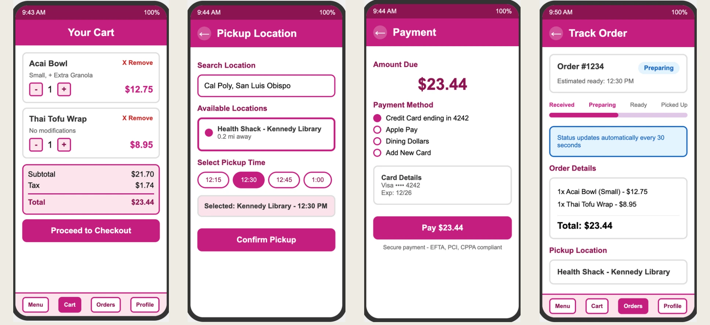
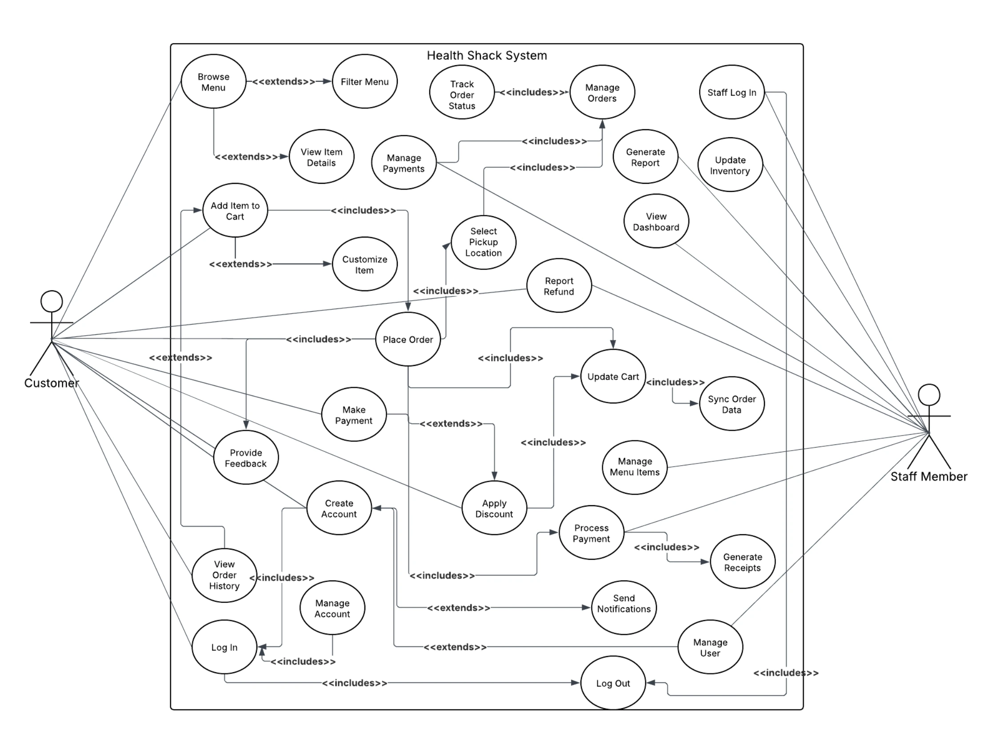
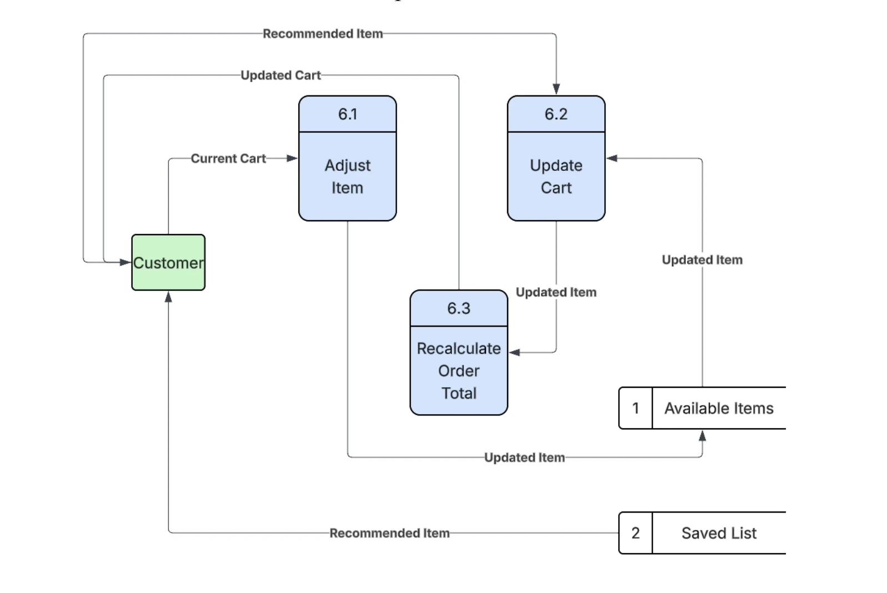
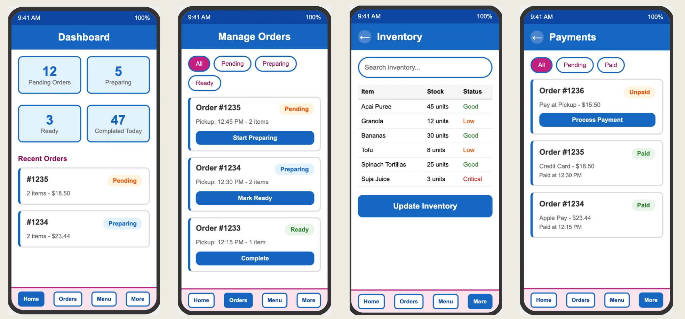

Systems Analysis · BUS 394 · 2025
Health Shack App
Order a bowl between classes. Give the crew behind the counter the same view of the order.
Health Shack is a food pop-up at Cal Poly San Luis Obispo. During busy periods, customers had to join the line just to place an order, and staff took orders verbally while keeping track of inventory by hand. For our systems analysis project, our five-person team designed a mobile pickup system that connects the customer’s checkout to the crew’s order queue.

What We Learned at the Counter
A teammate and I met with a Health Shack employee to understand how orders moved through the stand. We surveyed Cal Poly students online, asked customers about ordering in person, and returned to the employee to review the design. Across the in-person and online survey, 93.1% of respondents preferred online ordering.
That preference answered one question: customers wanted to order ahead. The employee’s perspective raised another: what happens after someone taps “Place Order”? A digital order would still need to reach the crew, reflect what was in stock, and tell the customer when to come back.
Turning Findings Into Requirements
- Long lines at peak hours. Customers could browse the menu, customize a bowl, and choose a pickup time before reaching the counter.
- Little visibility after ordering. Staff could change an order’s status as they prepared it. Customers could check that same order for pickup updates.
- Inventory tracked by hand. Staff needed a way to update stock. On the customer side, checkout needed to catch an unavailable item before accepting the order.
Modeling Both Sides of an Order
We wrote use cases for customers and staff. Each one described who started a task, what had to be true before it began, the normal steps, and what should happen if a step failed. For example, our “Place Order” use case included an inventory check. If an item was unavailable, the app needed to identify the affected item and give the customer a way to revise the order.




Our data-flow diagrams (DFDs) described how information moved behind those tasks. We started with the whole system, then followed individual actions in detail. Changing a quantity looks like a single tap on the cart screen. The diagram made us specify which item changes and when the customer should see the revised total.
Designing for the Crew
The staff mockups center on decisions an employee makes during a shift. The dashboard summarizes activity, the order queue shows tickets by status, and the inventory screen lets the crew adjust stock. We designed a separate payments view so an employee could look up a transaction without leaving payment details on the order preparation screen.

What We Delivered
We presented a proposed ordering system with documented requirements, use cases, data-flow diagrams, and customer and staff mockups. Together, those artifacts let Health Shack staff review a whole transaction, from a student choosing a bowl to an employee marking it ready. The next test would be a lunch-rush pilot measuring actual wait times and how easily the crew can keep order statuses current.
Back to Strategy & Design